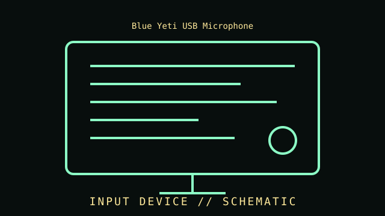

[ INPUT DEVICES // IDENTIFIED COMPONENT ]
Blue Yeti USB Microphone
Desktop USB microphone with selectable pickup patterns and direct headphone monitoring; not to be confused with later Yeti variants. Multi-pattern USB condenser microphone, original Yeti family.

IDENTIFICATION WARNING: Confirm the exact model, SKU, revision, interface, and driver support from the unit label and manufacturer documentation. Product-family names can cover materially different revisions.
Part specifications
| Catalog subcategory | Imaging and audio-capture peripherals |
|---|---|
| Catalog identity | Blue Yeti USB Microphone |
| Generation / family | Multi-pattern USB condenser microphone, original Yeti family. |
| Transducer | Three-capsule condenser array in the original Yeti family; capsule and electronics details can vary in later products. |
| Pickup patterns | Four selectable modes: cardioid, bidirectional, omnidirectional, and stereo. |
| Host interface | USB connection to a compatible computer; operating-system and application support vary. |
| Monitoring and controls | On-device headphone monitoring, mute, pattern selection, microphone gain, and headphone-level controls on the documented family. |
| Identification | Confirm the underside model/SKU label: Yeti, Yeti X, Nano, and newer Yeti products are distinct devices. |
Compatibility, care & service
- Confirm host connector, device protocol, operating-system support, driver availability, and required software before installation.
- Check the nameplate, product number, firmware, included cable, stand or film holder, and physical condition; preserve accessories with the device.
- For scanners and cameras, test image capture with a known target and record application, resolution, color mode, and profile. For microphones, document distance, gain, pattern, and recording chain.
- Do not use aggressive cleaners on optics, scanner glass coatings, capsule ports, or connector finishes; follow the manufacturer's care instructions.
Model-specific notes
A USB microphone is both a transducer and an audio interface; application sample-rate settings, operating-system gain, microphone gain, placement, room acoustics, and polar-pattern selection affect recordings. Avoid hot-plugging damaged USB connectors and preserve the original stand or mounting adapter with the unit.
Sources & further reading
- Logitech G / Blue — Yeti USB microphone product informationManufacturer product reference; check the exact SKU and regional revision against the specimen.
- Logitech Support — Yeti product support and manualsManufacturer support/documentation reference for setup, compatibility, or manuals.
Source claims should be checked against the full model number. An advertised maximum is not a guarantee of performance on every host or in every application.